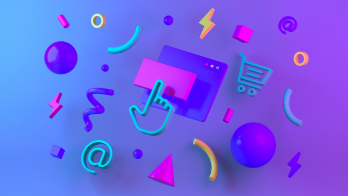
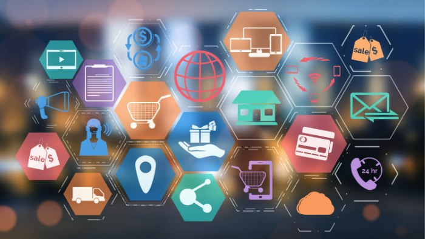

Omnichannel customer support vs multichannel support
15 years ago the average consumer typically used two touch-points when buying an item and only 7% regularly used more than four. Today consumers use an average of almost six touch-points with nearly 50% regularly using more than four. (Marketing Week)
Nowadays, customers seek to engage with brands across multiple channels on the platform of their choice. In a digitally-driven world, maintaining the high level of support needed to provide outstanding customer support is tremendously time-consuming. Businesses are scrambling to keep up with the many different communication channels their customers are on. This high expectation has paved the way for two different marketing approaches: omnichannel customer support and multichannel customer support.
Omnichannel and multichannel are marketing terms used frequently in the customer service industry. At their core, they have similarities and are often used interchangeably. Let’s dig into the difference between omnichannel customer support and multichannel customer support to figure out the benefits of each and what they can do for your business.
What is Omnichannel Customer Support?
To put it simply, omnichannel means “all channels.” Omnichannel customer support is a multichannel approach with one goal in mind: to provide a personalized and integrated customer experience (CX) across diverse devices and touchpoints. Conversation history and context should travel with the customer from channel to channel and flow into a single track - allowing representatives to provide more efficient support. Well-executed omnichannel support will result in a seamless experience because of its consistency and convenience for both the customer and the business, inevitably improving overall customer satisfaction and increasing revenue.
Data collected by Think With Google indicated that omnichannel strategies help generate around 80% of in-store visits by customers, with 74% of customers researching a business online before visiting a physical store. Omnichannel support not only efficiently stores customer data for ease of communication but also tremendously increases traffic. Let’s take a look at a real-world example.
Example of Omnichannel Customer Support
Omnichannel customer support will differ depending on the services of your business, but making your website mobile-friendly is always recommended. If you own a brick-and-mortar store, omnichannel support might mean creating a simple shopping experience for your customers via your eCommerce online store, mobile app, and in-person store, and establishing accounts for your shoppers where their data can easily be trackable. Then, you might arm your sales associates with iPads to provide shoppers with up-to-date product information, make on-the-spot orders if something is out of stock, or act as a cash register for customers to check out anywhere in the store. Ultimately, omnichannel support will create the highest level of convenience and allow your customers to complete tasks from multiple channels.
What is Multichannel Support?
We don’t have to make things complicated. Multichannel support is just what it sounds like - providing customer support across multiple channels. This is where omnichannel and multichannel differ. Where omnichannel support is a seamless connection between all platforms, multichannel support is simply the act of providing customer support across more than one channel. Instead of offering just social media, you might also send out email campaigns or provide chat support. As opposed to single-channel support, multichannel enables businesses to meet customers on their own terms.
Example of Multichannel Customer Support
When choosing a new product or service to invest in, it normally goes a little something like this…first, you think of a product you need and then you search for different options online. You might click through some websites or browse social media. Then, you may read through reviews or message chat support to answer any questions. If you aren’t available where your customers are looking, or if any of these steps signal off red flags such as bad reviews or dead-end chat support, you‘ve already lost a customer. Simply being available to customers is half the battle. Who is your customer base and where can they find you if they’re looking? This is the beauty of multichannel customer support.

What’s the Difference Between Omnichannel & Multichannel Support?
The key point that differentiates omnichannel from multichannel support is that omnichannel offers a seamless experience regardless of where the customer begins their interaction. Omnichannel support takes the customer experience to the next level by providing a holistic approach and many opportunities in terms of boosting brand awareness, brand loyalty, metrics, online presence, and of course, revenue.
**Omnichannel creates a seamless experience**
As opposed to multichannel support, omnichannel support focuses on consistency across channels instead of just maintaining great communication on each separate platform. It aims to provide an overall smooth experience and an effortless transition between channels that can sometimes get muddy with multiplatform support.
**Omnichannel is more customer-centric**
Not only is omnichannel straightforward and advantageous for many businesses but it also shows your customers that not wasting their time is a priority. The customer journey is not linear, and being available through multiple, integrated channels such as your website, social media, or live chat support will make your business preferred over competitors who do not offer these channels, or who only offer multichannel support.
**The same agent can speak to the same customers**
Customers want to talk to a real person, and they also want to talk to the same person about their problem instead of telling their story to many different people until it’s solved. With a lack of cohesiveness, multichannel support does not offer this level of proficiency. That same customer would have to explain the context of their conversation to the customer support agent in that department answering the phone. The context would be lost, and the experience would be significantly less pleasant.
**Omnichannel is more efficient**
Having a data system to store customer information makes systematically transitioning from platforms much simpler. It also allows for better, more specific marketing, and ease of conversation the next time your customers purchase or have an issue with their order.
**Multichannel is more customer-appeasing **
You may be thinking that omnichannel support is the better of the two, and as a business that offers omnichannel solutions, we agree. But that doesn’t mean that multichannel support doesn’t have its benefits. Multichannel support is a great start for smaller businesses that may not have the budget or the manpower to handle so many different platforms. If you’re looking to expand, we can help!

What are the Benefits of Omnichannel Support?
**Improve customer satisfaction**
Ensuring that you maintain your brand voice and satisfy customer expectations across platforms is vital. When your message remains the same, it increases brand awareness and improves the customer journey since they are getting the same experience wherever they go. This customer satisfaction increases customer retention and inevitably, sales.
**Engage more varied groups of customers**
Not all customers are going to use the same channel to discover your brand. Incorporating omnichannel support into your business strategy ensures that you are meeting the customer where they are and providing a high level of support to keep them as happy as you can.
**Gain additional context and better data**
With a thorough customer data management (CDM) system in place, it allows you to collect important information that complies with data regulations. Using customer data to your advantage empowers you to meet your customers’ expectations with personalized marketing communications and suggestions.
**Drive sales and traffic**
Omnichannel marketing creates a comprehensive view of the customer journey to deliver the right message, at the right time, without over-soliciting (because we all know how annoying that can be). The more your business is available, the higher reach and engagement it receives, and the more your sales skyrocket.
According to Google…
“Omnichannel shoppers have a 30% higher lifetime value than those who shop using only one platform.”
Why do customers prefer Omnichannel Support?
Customers of all ages and backgrounds desire omnichannel support. The amount of technology Gen Z has had in their lives makes it obvious that this generation prefers omnichannel communication, as they are constantly switching between digital devices and channels. More surprising though, is that older generations are also in favor of omnichannel support. 78% of Boomers report that they are unhappy when they have to restart a conversation with a brand. (The Drum)
Customers expect that they will have the ability to connect their in-store shopping with their digital purchases. Omnichannel support is the gold star in winning customer loyalty by connecting with customers on their preferred channel of communication and giving them what they’re looking for. Personalizing your omnichannel support helps in fostering a positive customer service experience for your brand and keeps your customers coming back for more.
How Does Influx Facilitate Omnichannel Customer Support for businesses?
Influx incorporates omnichannel customer support into our solutions by training our agents in your brand voice to ensure that each customer touchpoint is even better than the last. Our team of professionals provides you with the extraordinary customer support you and your shoppers need to guarantee monumental business growth and profit. What are you waiting for? Improve your omnichannel support by setting up a call with our sales team today!